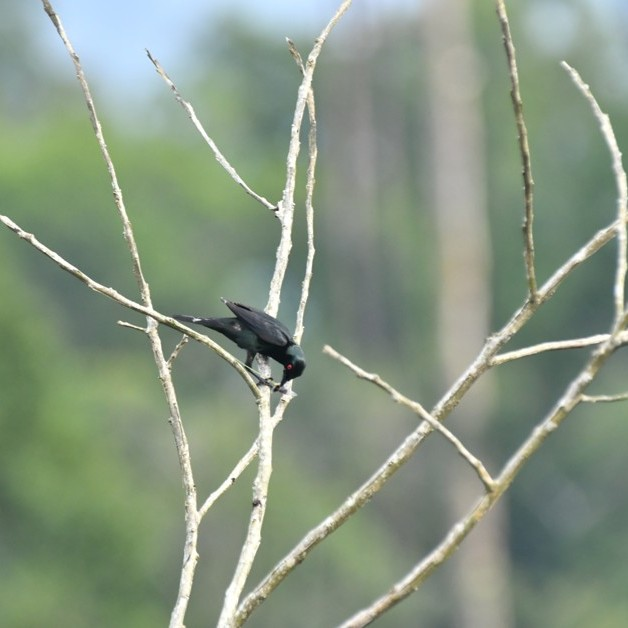
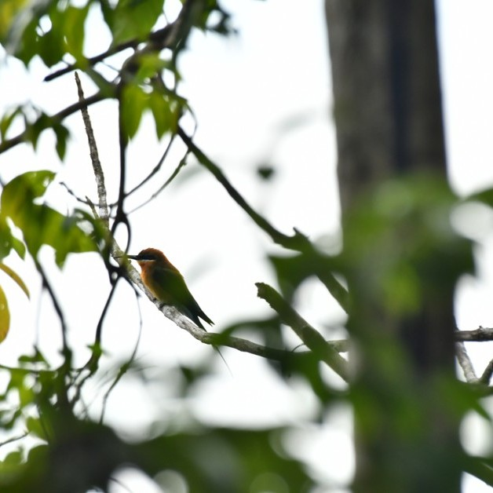
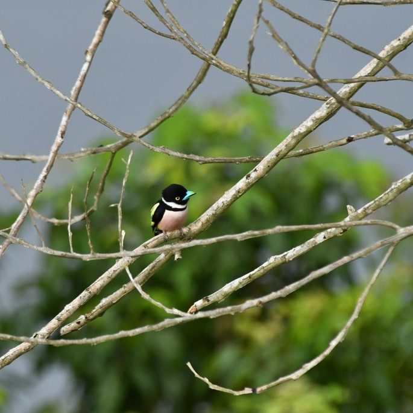
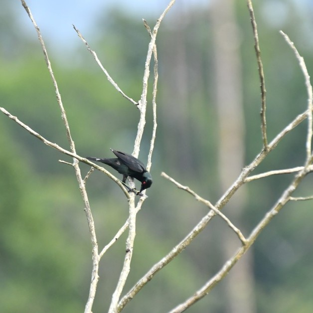
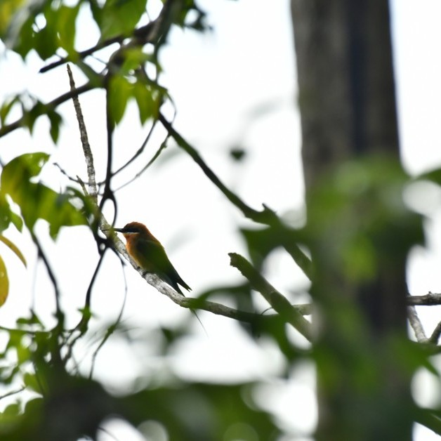
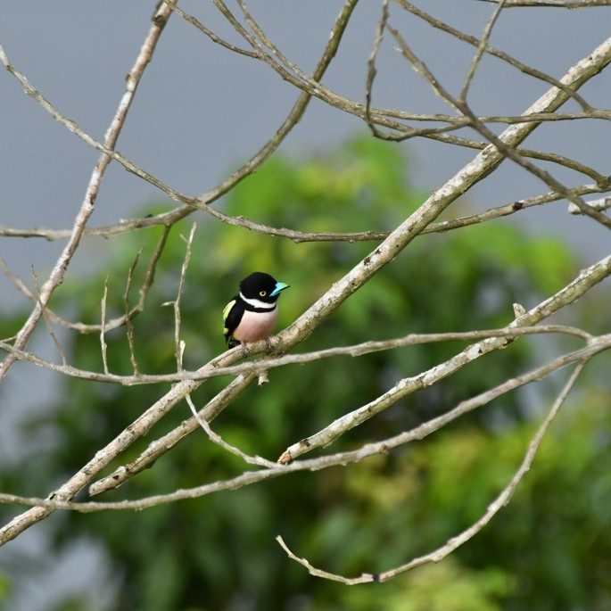

Destinasi Keanekaragaman Hayati
Temukan tempat yang menyatukan alam dan kearifan lokal, dengan fasilitas yang mendukung pelestarian keanekaragaman hayati, batas kawasan yang jelas, serta perencanaan vegetasi dan infrastruktur yang ramah lingkungan.

Peta Kondisi Prasarana
Peta interaktif yang menunjukkan kondisi prasarana pelestarian keanekaragaman hayati di kawasan konservasi Desa Modang.
Status: Beberapa fasilitas memerlukan perbaikan. Berikut adalah fasilitas yang memerlukan perbaikan:

Peta dan Pelaporan Batas Kawasan Konservasi
Temukan informasi mengenai batas kawasan konservasi yang jelas, serta laporkan aktivitas yang berpotensi merusak lingkungan di sekitar kawasan tersebut.
Status: Beberapa kawasan konservasi perlu pemetaan ulang batasnya. Klik untuk melihat peta dan melaporkan pelanggaran.

Desain Vegetasi
Panduan desain vegetasi yang mempertimbangkan keanekaragaman tanaman lokal, serta fungsi ekologis penting seperti penyerap polusi, penahan erosi, dan penyimpan air.
Status: Saat ini tersedia panduan untuk desain vegetasi lokal yang cocok untuk ruang terbuka hijau, taman desa, dan pinggir jalan. Klik untuk melihat detail lebih lanjut dan rencana vegetasi yang sesuai.

Rencana Desain Struktur Ramah Lingkungan
Desain infrastruktur yang mempertimbangkan dampak terhadap satwa dan keanekaragaman hayati, serta mendukung konservasi mikro habitat.
Status: Fasilitas dan infrastruktur yang mendukung konservasi satwa dan vegetasi sedang dalam tahap perencanaan. Klik untuk melihat lebih lanjut tentang desain ramah lingkungan.

 







👤 Profil Pengelola Taman Keanekaragaman Hayati


Selamat Datang di Desa Modang
Terletak di Kecamatan Kuaro, Kabupaten Paser, Kalimantan Timur, Desa Modang menjadi salah satu gerbang alami menuju kekayaan hayati Borneo. Di desa ini berdiri Taman Keanekaragaman Hayati (Kehati), sebuah ruang konservasi dan edukasi yang dikelola oleh Bidang Tata Lingkungan, sebagai wujud nyata pelestarian flora dan fauna endemik di Kalimantan.
Dengan lanskap hijau yang masih asri dan keanekaragaman hayati yang tinggi ini dapat menghadirkan suasana tenang sekaligus menyadarkan pentingnya menjaga keseimbangan ekosistem untuk masa depan.
Tentang KamiPeta Desa Modang
Jelajahi Kawasan Taman Keanekaragaman Hayati dan Konservasi Desa Modang
Filter Peta:
Klik pada marker di peta untuk melihat detail lokasi wisata.
Etika Berkunjung ke Desa Modang
Bantu Kami Menjaga Kelestarian Alam dan Budaya Desa Modang
Membuang Sampah pada Tempatnya
Jaga kebersihan lingkungan dengan membawa kembali sampah kalian atau membuangnya di tempat yang telah disediakan. Sampah organik bisa dikubur.
Menghormati Flora dan Fauna
Jangan merusak atau mengambil tanaman/tumbuhan. Amati satwa liar dari jarak aman tanpa mengganggu habitat atau memberi makan mereka.
Hindari Api di Kawasan Hutan
Dilarang membuat api unggun kecuali di area yang ditentukan. Pastikan api benar-benar padam sebelum meninggalkan lokasi.
Dilarang Merokok di Kawasan Hutan
Merokok hanya diperbolehkan di area tertentu. Pastikan puntung rokok benar-benar padam sebelum dibuang di tempat sampah.
Apa Kata Pengunjung?
Pengalaman Mereka Menjelajahi Desa Modang
Siap Mengunjungi Desa Modang?
Rencanakan perjalanan kamu sekarang dan dapatkan pengalaman wisata alam yang tak terlupakan di jantung Kalimantan Timur.